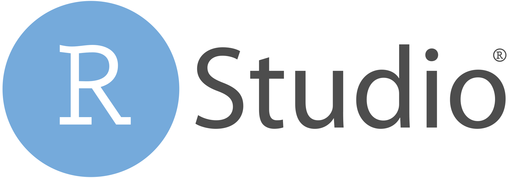

Travailler sous R avec RStudio
Comment ça marche ?
Introduction
Un bref rappel de ce qu’est 

- Un langage de programmation open source
- Un logiciel de calcul scientifique interactif et interprété, dédié aux analyses statistiques et aux visualisations de données
- Un logiciel libre (licence AGPLv3), gratuit, constamment mis à jour et amélioré
- Disponible en téléchargement sur le site du CRAN (Comprehensive R Archive Network) : http://cran.r-project.org
- Compatible avec la plupart des systèmes d’exploitation (Windows, MacOS, Linux)
Utilisation de R
RStudio
Présentation rapide 
Conçu spécialement pour
RDisponible en version “locale” RStudio Desktop ou en version “serveur” RStudio Server
Téléchargerment sur le site de posit : https://posit.co/downloads/
Permet
d’utiliser le langage
Rde réaliser des analyses statistiques
de visualiser des tableaux et des figures
Avantages
- Interface plutôt simple, intuitive et conviviale et surtout configurable
- Éditeur de script avec coloration syntaxique
- Fonctionnalités pratiques d’édition et d’exécution du code
- Affichage simultané du code, de la console, des fichiers, graphiques et des pages d’aide
NB : Installer R avant d’installer RStudio
Interface en 4 quadrants
1. Éditeur de texte ou de code
2. Environnement de travail, historique, fichiers, …
3. Aide, graphiques, packages installés, visualisation…
4. Console, …
1. Les scripts
Des fichiers “texte” pour des traitements qui vont nécessiter des modifications.
Avantages
- garder la trace des lignes de code
- exécuter une/des ligne(s) de code : bouton
Runou raccourci clavierCtrl + EntréeouCtrl + R - modifier le code
- ajouter des commentaires
- réutiliser le code sur d’autres jeux de données
#Reproductibilité
NB : Il est vivement recommandé de commencer l’écriture du script par les packages utilisés, pour les identifier plus rapidement
2. L’environnement / L’historique / Les connexions
Onglet Environment
- objets (données, fonctions, résultats) créés dans cet environnement
- 2 affichages possibles : liste ou grille (permet de supprimer des objets en cochant la case à côté du nom + clic sur l’icone
Balai)
Onglet History
- historique des commandes exécutées
- on peut renvoyer le code dans la console ou la source
Onglet Connections
- pour se connecter à diverses sources de données (par ex. bases de données externes)
3. Les graphiques/ Les packages / L’aide
Onglet Plots
- fenêtre où s’affichent les graphiques créés
- possibilité de zoomer, de naviguer entre les graphiques ou de les copier
- export des graphiques au format image (jpeg, png, tiff) ou pdf
Onglet Packages
- liste des packages installés sur la machine
- installation de nouveaux packages ; mise à jour des packages installés
- un clic sur le nom d’un package affiche les pages d’aide correspondant
Onglet Help
- pour afficher la documentation de chaque fonction
- accès à des manuels ou des à aides-mémoire (cheatsheets)
4. La console
- Pour effectuer et afficher les résultats de calculs de base (+, -, *, /, etc. )
- Pour utiliser des fonctions spécifiques :
sum(),abs(),round(), etc. - Les commandes sont exécutées au fur et à mesure qu’elles sont écrites en appuyant sur la touche
Entrée= calculatrice
Astuce : On peut remonter dans l’historique des commandes pour en rappeler une, à l’aide des flèches haut/bas
Projet
Pour organiser son travail pour chaque projet d’analyse de données
Regroupe en un seul endroit tous les scripts
R, documentsRmarkdown/Quarto, fonctions, données, résultats et fichiers de sortieChaque projet possède son propre répertoire, espace de travail, historique et ses propres documents sources
- les différentes analyses sont complètement séparées les unes des autres
- possibilité de passer d’un projet à l’autre sans craindre qu’ils n’interfèrent les uns avec les autres
La création d’un nouveau projet se fait à partir de l’icône dédiée en haut à droite de
RStudio, en sélectionnant l’optionNew projectIl est recommandé d’organiser son projet, de le structurer en (sous-)dossiers pour ranger efficacement les différents documents liés à l’analyse
Exemples de structuration
Minimale
Optimale
Source : https://learn.r-journalism.com/en/publishing/workflow/r-projects/
Chacun s’organise de la façon qu’il juge la plus adaptée à ses usages !
Addins
Extensions proposées par
RStudiopour simplifier certaines manipulations https://github.com/daattali/addinslist#readmeExemples
addinslist: parcourir et installer les addins deRStudiocolourpicker: sélectionner une couleur dans les graphiquesesquisse: créer un graphique ggplot2questionr: discrétiser une variable ; réordonner ou recoder un facteurremedy: simplifier l’écrituremarkdown(convertir le texte sélectionné en titre1, titre2, etc.)ReplaceInFiles: rechercher et remplacer une valeur dans plusieurs fichiersstrcode: structurer le code (sauts de section avec titre en en-tête)viewxl: voir les dataframes sous Excel en un clic
Des questions ?

Twix - 01 juin 2023